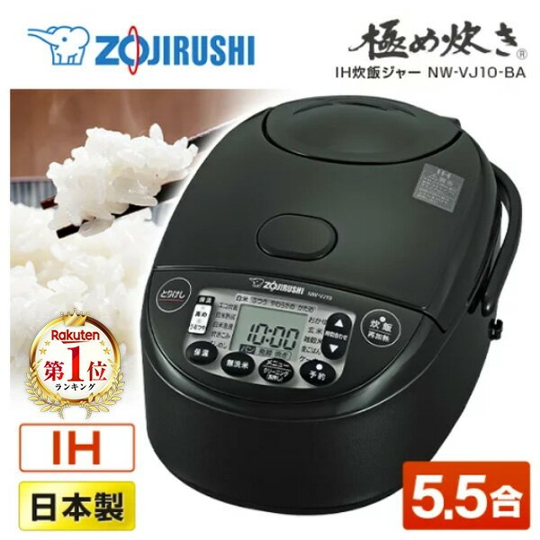
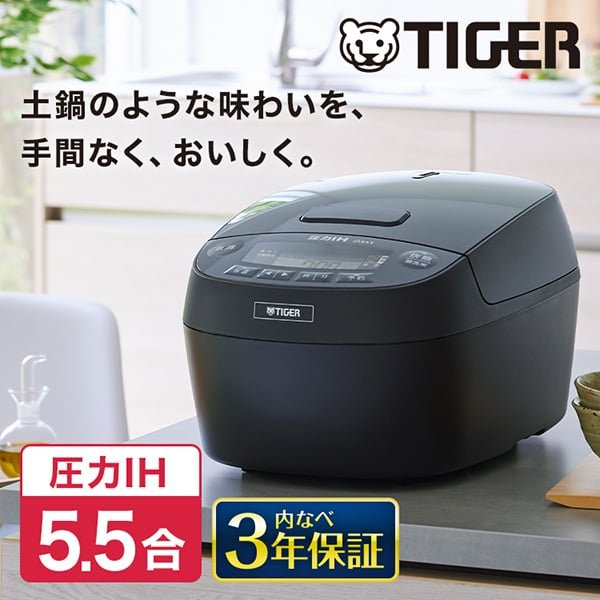
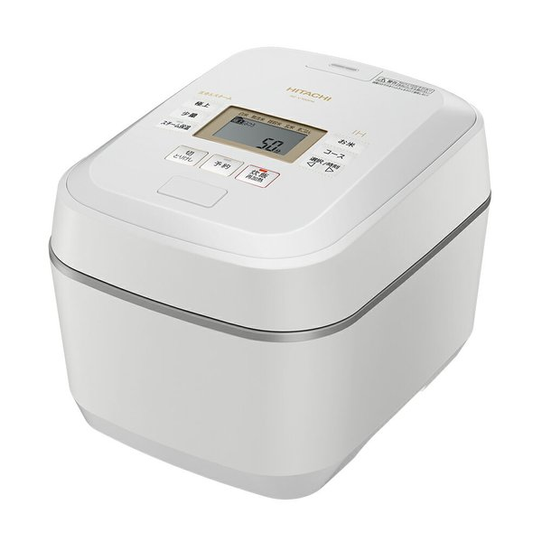
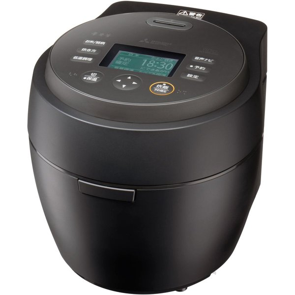
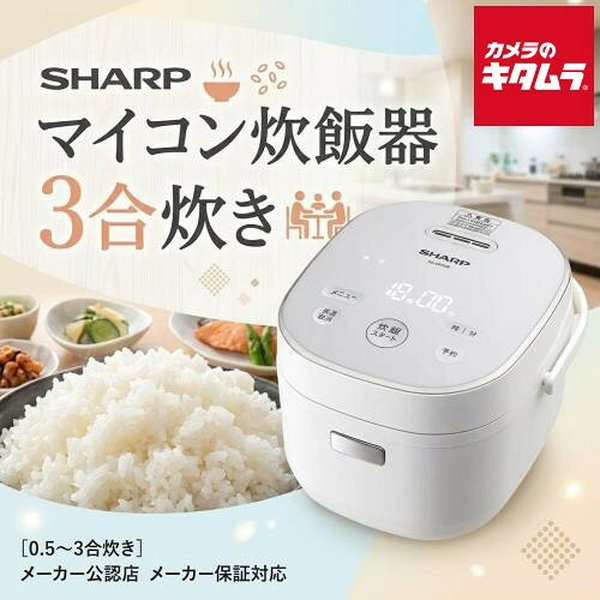
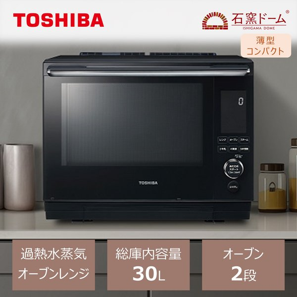
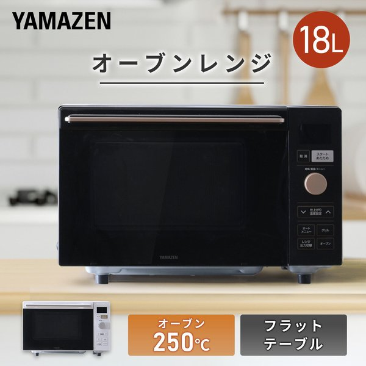
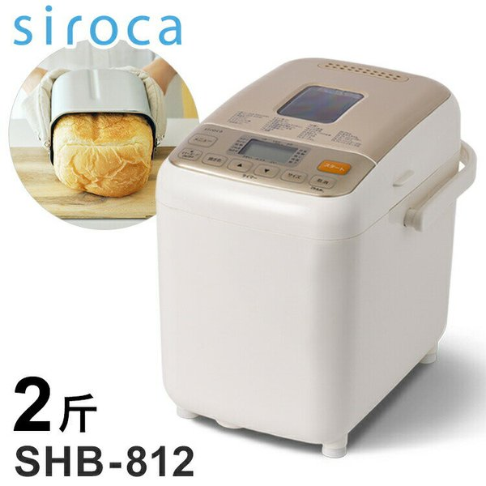
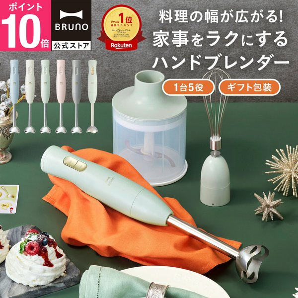
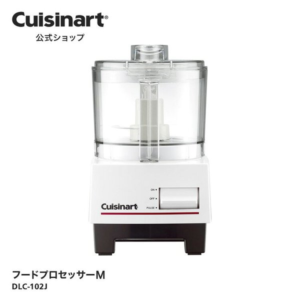

【2026年・ブラックフライデー】炊飯器・オーブンレンジ・ホームベーカリー・ブレンダー・フードプロセッサー10選｜象印・タイガー・日立・三菱電機・シャープ・東芝・山善・シロカ・BRUNO・クイジナートを実売価格で比較
毎日のごはんと下ごしらえは、家電の選び方で手間が変わります。炊飯器、レンジ、ホームベーカリー、ブレンダー、フードプロセッサー。どれも「あると便利」ですが、置き場所と予算は限られています。
選ぶ軸は3つです。「まず家族の人数」。5.5合の炊飯器は3〜5人、3合は1〜2人に向きます。「次にレンジに何をさせるか」。あたためだけなら単機能、オーブン料理もするなら30L前後のオーブンレンジが向きます。「最後に手入れのしやすさ」。内ぶたやパンケースが外せるかどうかで、毎日の手間が変わります。なお、レビュー件数が50件に満たない商品は記事内に実数を明記しています。
本記事では、楽天市場で人気・高評価の炊飯器・オーブンレンジ・ホームベーカリー・ブレンダー・フードプロセッサー10選を、実売価格とレビュー評価つきで写真付き紹介します。
- おすすめ10選 スペック・特徴比較表
- BEST 1｜象印 極め炊き IH炊飯ジャー 5.5合 NW-VJ10-BA
- BEST 2｜タイガー魔法瓶 圧力IH炊飯ジャー 5.5合 JPV-C100KG
- BEST 3｜日立 圧力&スチームIH炊飯ジャー 5.5合 RZ-V100FM
- BEST 4｜三菱電機 本炭釜 紬 IH炊飯ジャー 5.5合 NJ-BW10
- BEST 5｜シャープ マイコン炊飯器 3合炊き KS-CF05B
- BEST 6｜東芝 石窯ドーム 過熱水蒸気オーブンレンジ 30L ER-D3000A
- BEST 7｜山善 オーブンレンジ 18L YRP-F181TV
- BEST 8｜シロカ ホームベーカリー 2斤
- BEST 9｜BRUNO マルチスティックブレンダー2 BOE140
- BEST 10｜クイジナート フードプロセッサーM DLC-102J
- 【読者負担0円】買わなくても得する無料サービス
- まとめ：炊飯器・レンジ・パン・下ごしらえ家電10選の選び方
| 順位 | 商品名 | ブランド | 最大の特徴・おすすめ理由 | 総合評価 |
|---|---|---|---|---|
| BEST 1 | 象印 極め炊き IH炊飯ジャー 5.5合 NW-VJ10-BA | 象印（ZOJIRUSHI） | 黒まる厚釜で釜全体に熱が回る | 4.54 |
| BEST 2 | タイガー魔法瓶 圧力IH炊飯ジャー 5.5合 JPV-C100KG | タイガー魔法瓶（TIGER） | 遠赤3層土鍋コート釜で熱が伝わりやすい | 4.60 |
| BEST 3 | 日立 圧力&スチームIH炊飯ジャー 5.5合 RZ-V100FM | 日立（HITACHI） | 圧力とスチームの組み合わせでふっくら炊ける | 4.42 |
| BEST 4 | 三菱電機 本炭釜 紬 IH炊飯ジャー 5.5合 NJ-BW10 | 三菱電機（MITSUBISHI ELECTRIC） | 本炭釜で遠赤効果のある炊き上がり | 5.00 |
| BEST 5 | シャープ マイコン炊飯器 3合炊き KS-CF05B | シャープ（SHARP） | 0.5合から3合まで炊ける | 4.48 |
| BEST 6 | 東芝 石窯ドーム 過熱水蒸気オーブンレンジ 30L ER-D3000A | 東芝（TOSHIBA） | 過熱水蒸気で油を使わずに調理できる | 4.73 |
| BEST 7 | 山善 オーブンレンジ 18L YRP-F181TV | 山善（YAMAZEN） | 18Lのフラット庫内で手入れが簡単 | 4.16 |
| BEST 8 | シロカ ホームベーカリー 2斤 | シロカ（siroca） | 2斤まで焼けるので家族の朝食に向く | 4.57 |
| BEST 9 | BRUNO マルチスティックブレンダー2 BOE140 | BRUNO（ブルーノ） | 1台5役で下ごしらえがまとまる | 4.59 |
| BEST 10 | クイジナート フードプロセッサーM DLC-102J | クイジナート（Cuisinart） | 1台5役で刻む・混ぜる・こねるをこなす | 4.68 |
象印 極め炊き IH炊飯ジャー 5.5合 NW-VJ10-BA

象印の極め炊きは、黒まる厚釜を採用したIH炊飯ジャーです。5.5合炊きで、3〜5人の家庭の毎日のごはんに向いています。内ぶたが外して洗えるので、炊いたあとの手入れが短く済みます。白米のほか、玄米やおかゆのメニューも本体で選べます。楽天市場での実売価格は約17,420円（2026年11月時点）。
- 黒まる厚釜で釜全体に熱が回る
- 5.5合で家族の毎日ごはんに合う
- 内ぶたが外せて洗いやすい
- 圧力IHの上位モデルと比べると、もちもち感は控えめになる
タイガー魔法瓶 圧力IH炊飯ジャー 5.5合 JPV-C100KG

タイガー魔法瓶の圧力IH炊飯ジャーは、遠赤3層土鍋コート釜で圧力をかけて炊くモデルです。5.5合炊きで、粘りのあるごはんを炊きたい家庭に向いています。メーカー保証は3年で、長く使う前提で選べるのも特徴です。楽天市場での実売価格は約26,980円（2026年11月時点）。
- 遠赤3層土鍋コート釜で熱が伝わりやすい
- 圧力IHで粘りのある炊き上がり
- メーカー保証3年で長く使える
- 圧力IHは本体が大きく重いので、炊飯器の置き場所を決めてから買う
日立 圧力&スチームIH炊飯ジャー 5.5合 RZ-V100FM

日立のふっくら御膳は、圧力とスチームを組み合わせたIH炊飯ジャーです。沸騰鉄釜を使い、蒸気カットで炊飯中の蒸気を抑えます。八代目儀兵衛の監修メニューが入り、5.5合炊きながら保温は24時間まで設定できます。楽天市場での実売価格は約51,800円（2026年11月時点）。
- 圧力とスチームの組み合わせでふっくら炊ける
- 蒸気カットで置き場所の壁を汚しにくい
- 24時間保温に対応
- 価格が5万円台で、今回紹介する炊飯器のなかではもっとも高い
三菱電機 本炭釜 紬 IH炊飯ジャー 5.5合 NJ-BW10

三菱電機の本炭釜 紬は、炭を成型した本炭釜を使ったIH炊飯ジャーです。かまど炊きと八重全面加熱で、釜の側面からも熱を入れます。銘柄芳潤炊きに対応し、5.5合炊きで家族のごはんに向いています。楽天市場での実売価格は約49,800円（2026年11月時点）。
- 本炭釜で遠赤効果のある炊き上がり
- 八重全面加熱で釜全体を包んで炊く
- 銘柄芳潤炊きで米の銘柄に合わせられる
- レビューは8件とまだ少なく、長期使用の評価はこれから
シャープ マイコン炊飯器 3合炊き KS-CF05B

シャープのマイコン炊飯器は、0.5合から3合まで炊ける小型モデルです。一人暮らしや、子ども用に少量だけ炊きたい家庭に向いています。本体が軽く、炊飯器を毎回しまう暮らしでも扱いやすいサイズです。楽天市場での実売価格は約7,980円（2026年11月時点）。
- 0.5合から3合まで炊ける
- 本体が軽くて出し入れしやすい
- 操作がシンプルで迷わない
- マイコン式なので、IHのような強い火力は出せない
東芝 石窯ドーム 過熱水蒸気オーブンレンジ 30L ER-D3000A

東芝の石窯ドームは、過熱水蒸気を使う30Lのオーブンレンジです。薄型のコンパクト設計で、庫内はフラット。2段調理に対応し、焼き物と副菜を同時に作れます。トーストや冷凍食品のあたためから、オーブン料理まで1台でまかなえます。楽天市場での実売価格は約59,800円（2026年11月時点）。
- 過熱水蒸気で油を使わずに調理できる
- 30Lでも薄型で置き場所を選びにくい
- 2段調理で同時に2品作れる
- 30Lの庫内は広いぶん、本体の幅はそれなりに取る
山善 オーブンレンジ 18L YRP-F181TV

山善のオーブンレンジは、18Lのフラット庫内のモデルです。自動メニューが18種類入り、あたためからオーブン、グリルまで切り替えて使えます。ヘルツフリーなので引っ越してもそのまま使え、はじめての1台に向いています。楽天市場での実売価格は約19,800円（2026年11月時点）。
- 18Lのフラット庫内で手入れが簡単
- 自動メニュー18種類で操作に迷わない
- ヘルツフリーで引っ越し後も使える
- 単機能レンジに近い設計で、本格的なオーブン調理には向かない
シロカ ホームベーカリー 2斤

シロカのホームベーカリーは、2斤まで焼けるモデルです。高加水パンや米粉パン、餅つき、ケーキ、ジャムまでメニューが入り、材料を入れてボタンを押すだけで焼き上がります。消音ブザー付きで、夜に予約しても音が気になりにくい設計です。楽天市場での実売価格は約15,800円（2026年11月時点）。
- 2斤まで焼けるので家族の朝食に向く
- 高加水パンや米粉パンも焼ける
- 消音ブザーで夜の予約でも音が小さい
- 2斤は家族向けの大きさで、1人分には焼きすぎる
BRUNO マルチスティックブレンダー2 BOE140

BRUNOのマルチスティックブレンダー2は、1台5役のハンドブレンダーです。つぶす・まぜる・きざむ・砕く・泡立てるを1本でまかない、離乳食づくりやスムージーにも使えます。パーツが外せるので、使ったあとの洗い物が短く済みます。楽天市場での実売価格は約7,700円（2026年11月時点）。
- 1台5役で下ごしらえがまとまる
- 離乳食やスムージーに使える
- パーツが外せて洗いやすい
- 連続使用できる時間が短く、固い食材を大量に処理するのは苦手
クイジナート フードプロセッサーM DLC-102J

クイジナートのフードプロセッサーMは、2〜3人分の調理に向けたモデルです。1台5役で、刻む・混ぜる・スライス・せん切り・こねるをこなします。5種類のアタッチメントが付き、みじん切りや生地づくりをまとめて任せられます。楽天市場での実売価格は約15,950円（2026年11月時点）。
- 1台5役で刻む・混ぜる・こねるをこなす
- 2〜3人分の容量で毎日の調理に合う
- アタッチメント5種付き
- 本体に重さがあるので、使い終わったら定位置に戻す前提で置き場所を決める
この記事の商品を買う前に、まずは無料で得する選択肢をチェック。どれも登録・利用は0円で、無料期間中に解約すれば料金はかかりません。読みたい雑誌がある人、ポイントを貯めたい人、アンケートなら気軽という人、それぞれに合うものを選べます。
初回31日無料・無料期間中に解約すれば0円 → 楽天ポイントモール｜登録無料で毎日ポイ活
買い物なしでもポイントが貯まる無料サービス → 楽天インサイト｜アンケートに答えてポイント
登録無料・すきま時間のアンケートで貯まる → 楽天カード｜年会費永年無料
新規発行・年会費ずっと0円 →
4つのサービスの違いと使い分けは「出費0円で得する！買わずにポイントが貯まる無料サービス厳選4選」でまとめています。
💡 まとめ：炊飯器・レンジ・パン・下ごしらえ家電10選の選び方
炊飯器は家族の人数で選ぶと迷いません。3〜5人なら象印のIH 5.5合、タイガーの圧力IH、日立の圧力&スチーム、三菱電機の本炭釜。1〜2人ならシャープの3合マイコンで十分です。レンジは、あたため中心なら山善の18L、オーブン料理もするなら東芝の石窯ドーム30L。パンと下ごしらえは、シロカのホームベーカリー、BRUNOのハンドブレンダー、クイジナートのフードプロセッサーを揃えると、朝食から夕食の支度まで1台ずつ役割が分かれます。
楽天市場では「5と0のつく日」や「お買い物マラソン」などのキャンペーンに合わせて購入すると、ポイント還元が最大化してお得に手に入ります。ぜひチェックしてみてくださいね。